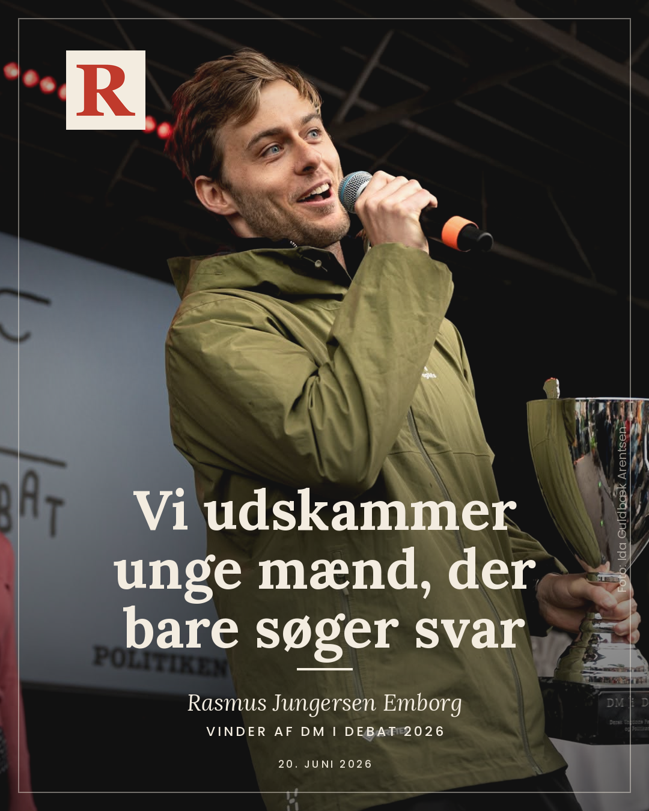
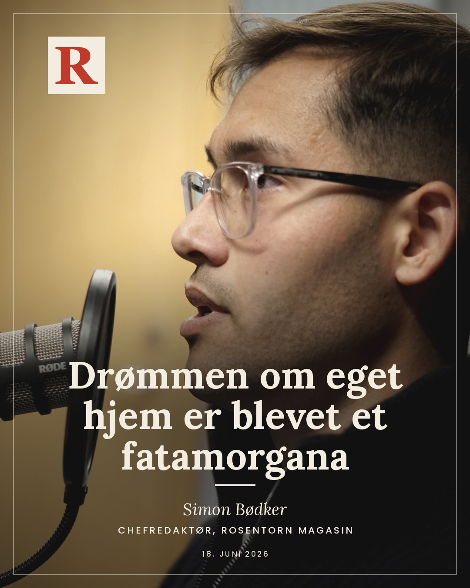

-
 Teknologi
TeknologiAI er en eksistentiel trussel
Verdens stærkeste AI-systemer kan slukkes med et brev fra en fremmed regering, og samtidig overlader vi dem vores arbejde, vores forsvar og vores dømmekraft. Hvis vi ikke tager demokratisk kontrol over teknologien nu, kommer den til at styre os.
-
 Sikkerhed
SikkerhedVi voksede op med en løgn
Vi voksede op i troen på en evig liberal verdensorden med USA i ryggen. Den løgn må Norden nu erstatte med et nært, nordisk forsvar mod en russisk trussel, der allerede er her.
-

SamfundVi udskammer unge mænd, der bare søger svar
Efter jeg vandt DM i Debat, har jeg valgt at åbne op om noget, jeg har holdt hemmeligt i mange år. Om social angst, skam og de unge mænd, vi taber.
-

SamfundDrømmen om eget hjem er blevet et fatamorgana
Boligpriserne i København stiger hurtigere end lønningerne, og en hel generation skubbes ud af ejerboligen. Richard Sennetts analyse af det fleksible menneske rammer plet.